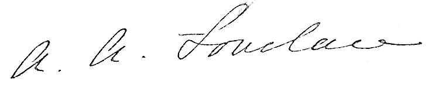

FCC-TP
Ada Lovelace
ABOUT
" The First Computer Programmers "
The Right Honourable
Biography
The Countess of Lovelace
Augusta Ada King, Countess of Lovelace (née Byron; 10 December 1815 – 27 November 1852) was an English mathematician and writer, chiefly known for her work on Charles Babbage's proposed mechanical general-purpose computer, the Analytical Engine. She was the first to recognise that the machine had applications beyond pure calculation, and to have published the first algorithm intended to be carried out by such a machine. As a result, she is often regarded as the first computer programmer. The young girl was brought up by her maternal grandmother and servants. Her grandmother died when Ada was just seven years old, and Ada herself suffered long spells of poor health in both childhood and later. One thing her mother insisted upon was that Ada should get a high quality education. She developed the design for a flying machine when she was only 13 years old. She was educated by tutors, including Mary Somerville, for whom she had a great amount of respect and with whom she corresponded many years. Mary Somerville was the one who introduced her to Charles Babbage.
Ada Lovelace discovered that a computer could follow a sequence of instructions—that is, a program. About a century before Konrad Zuse designed the first programmable computing machine, in the 1840s, Ada Lovelace wrote the first computer programme in the world. From a modern perspective, her work is visionary. She also added thousands of words of her own notes to the paper. Lovelace realized that the Analytical Engine could carry out an extensive sequence of mathematical operations. The example she wrote of one such sequence—how to calculate Bernoulli numbers—is regarded by computer historians as the first computer program.
In 1835, Lovelace married William King, who became the Earl of Lovelace three years later. She then took the title of Countess of Lovelace. They shared a love of horses and had three children together. From most accounts, he supported his wife's academic endeavors. Lovelace and her husband socialized with many of the interesting minds of the times, including scientist Michael Faraday and writer Charles Dickens.
Lovelace's health suffered, however, after a bout of cholera in 1837. She had lingering problems with asthma and her digestive system. Doctors gave her painkillers, such as laudanum and opium, and her personality began to change. She reportedly experienced mood swings and hallucinations.
“The more I study, the more insatiable do I feel my genius for it to be.”
Ada Lovelace,
To know more about Ada Lovelace, Just click Here.